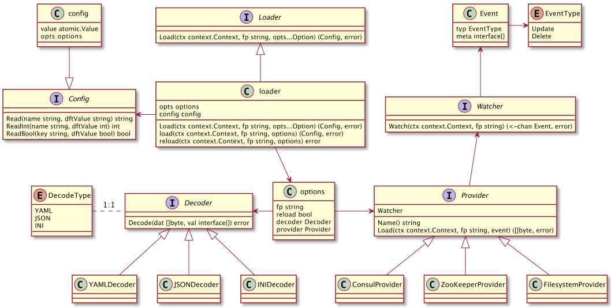

config
模块设计：config
该模块的详细设计如下图所示，其中主要包括Loader、Provider、Watcher、Decoder、Config的接口设计及实现。

结合上图我们简单解释下各枚举类型、接口类型、实现类的作用，以及为什么这么设计。\
- Loader，它通过一个配置选择符fp来获取一份配置Config。loader是Loader接口的默认实现，它相当于其他几个核心接口Provider、Decoder的使用者，通过Provider获取到配置内容，然后通过Decoder完成配置内容的解析。对于需要支持reload配置的场景，loader通过Provider对Watcher的支持来获取配置变更相关的通知，并重新reload配置文件Config；
- Provider，它是配置文件的提供者，可以是本地文件系统FilesystemProvider，也可以远程的配置中心，如ConsulProvider、ZooKeeperProvider等。Provider要有能力感知配置的变更，并给Loader发出通知，所以Provider必须要实现Watcher接口；
- Watcher，配置信息是有可能在初次加载后发生变化的，当发生变化时一般希望应用程序能感知到并使用最新配置工作。Watcher的作用就是监控配置信息变化并及时通知外部，如文件系统的内容变化可以通过系统提供的fsnotify来监控文件或目录的变更；
- Event && EventType，Watcher观测到的事件及分类，我们需要能区分配置信息发生了哪种变化，如修改时我们需要重新reload配置，那如果是删除呢？程序对此的处理应不同，因此有必要根据事件类型来详细区分，所以这里定义了Event中包含EventType字段；
- Decoder，当拿到配置信息后，Loader还需要通过合适的解析器将[]byte解析成符合某种格式规范的结构化配置信息，如JSON、YAML、INI等；
- Config，不管是那种类型的配置信息，我们希望能够提供给一致的配置读取接口，这里的读取无外乎读取string、int、bool等类型，能满足大部分使用场场景。但是如果希望指定些复杂的配置项，如slice of struct，这种我们建议通过helper函数的方式来解决，如先拿到配置信息，然后再反序列；
- config，config是Config的默认实现，它实现了配置的Read功能。注意当有配置文件reload时希望仍然对外部用户提供一致的读取接口，同时希望避免让用户独自处理收取Watcher事件并通知更新的方式。如果框架不能解决这些，如果存在配置reload，开发将不得不重复写类似的处理逻辑，很是不便。所以在设计config时，内部通过变量value atomic.Value来存储最新的配置信息，每次读取时都会先atomicValue.Load()拿到最新配置信息，然后再读取。
相信大家已经明白这么设计的初衷了，大家可能有自己的思考，不妨分享碰撞一下。